You'll create a free Google Cloud project so that Unsubinator can read your Gmail headers with your own permission. It costs nothing and needs no billing account. Allow about ten minutes.
The pictures are illustrations with example data (you@example.com and a made-up client ID). Google changes its screens from time to time, so yours may look a little different, but the names of the buttons and fields should match.
You'll need this item ID in step 7: mokkckihdecngaghbheeecogajbpaahc
unsubinator with manifest.json inside it. Keep it somewhere permanent, because Chrome loads the extension from that folder.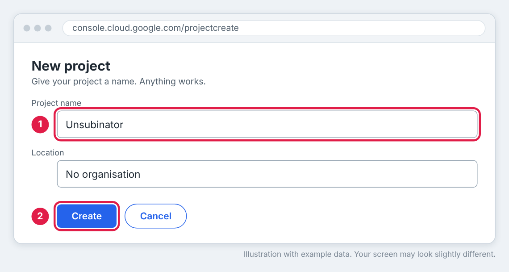
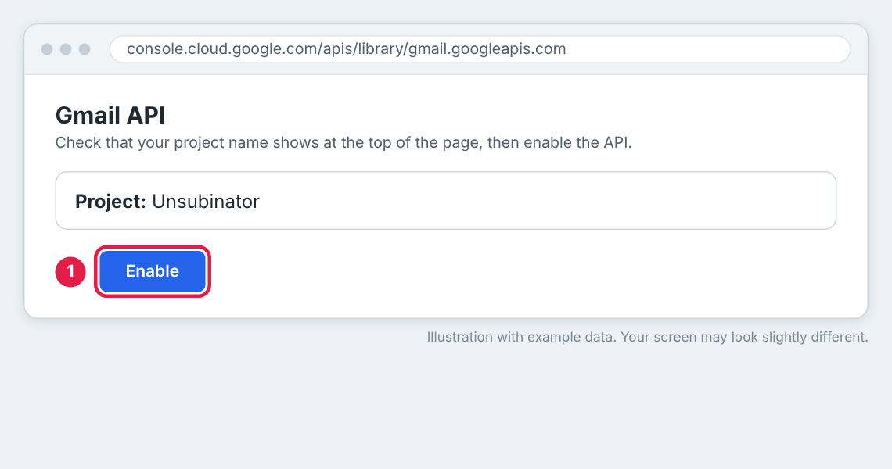
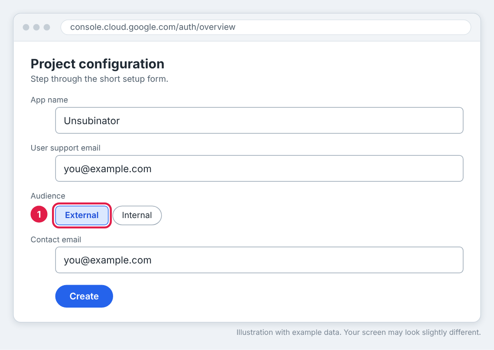
https://www.googleapis.com/auth/gmail.readonly into the manual scopes box (2), then click Update and Save.
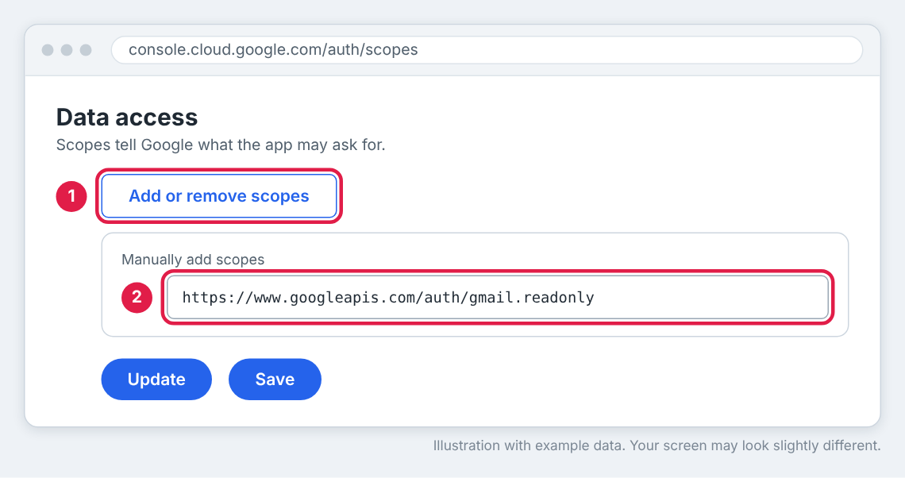
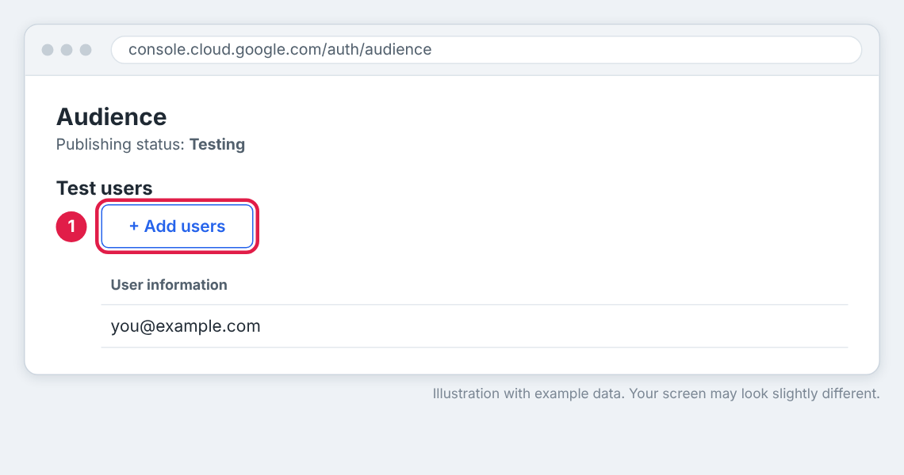
mokkckihdecngaghbheeecogajbpaahc into Item ID (2). Click Create.
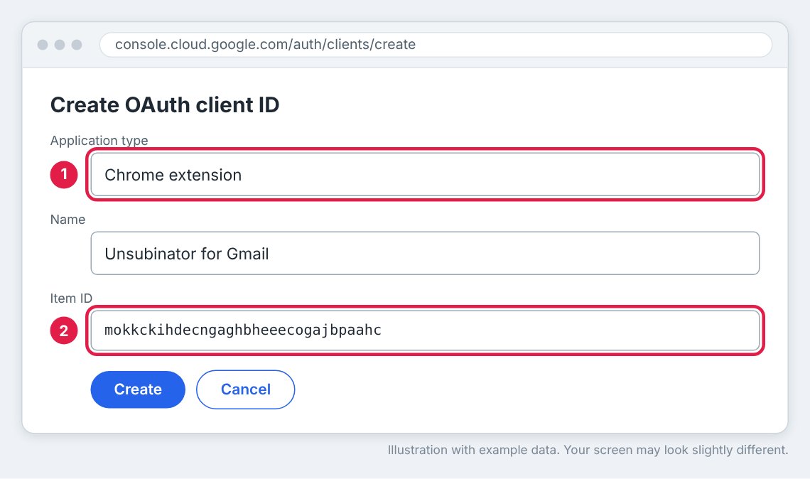
.apps.googleusercontent.com. You can find it again later on the Clients page.
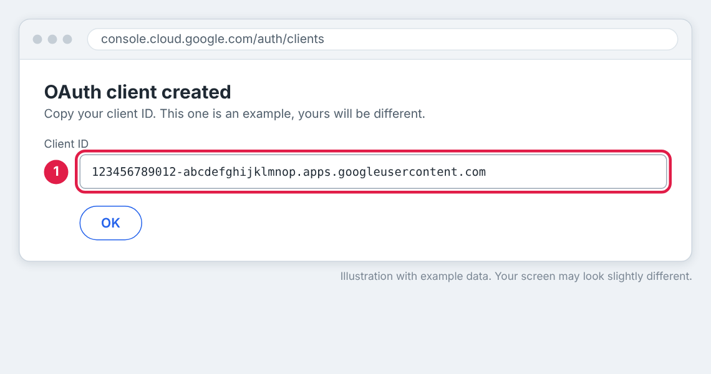
manifest.json in a plain-text editor (Notepad, VS Code, or TextEdit in plain-text mode). Replace YOUR_CLIENT_ID.apps.googleusercontent.com with your own client ID. Keep the straight quotation marks and the comma at the end of the line, then save.
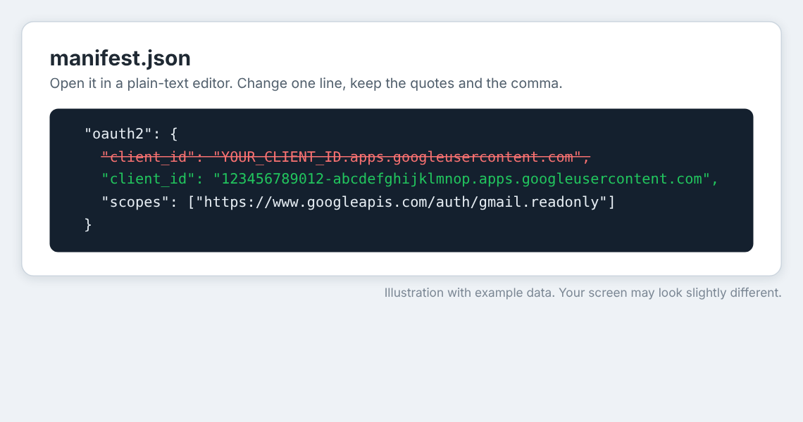
chrome://extensions. Switch on Developer mode (1), click Load unpacked (2) and choose the unsubinator folder, the one that directly contains manifest.json.mokkckihdecngaghbheeecogajbpaahc (3). If it isn't, sign-in will fail with "bad client id".
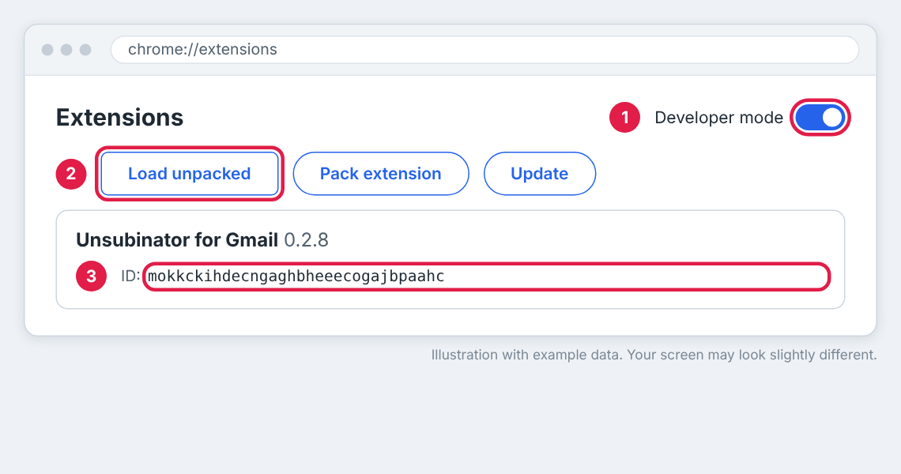
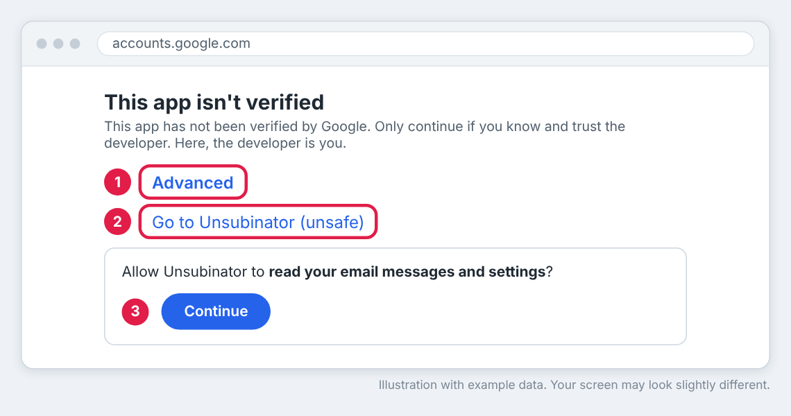
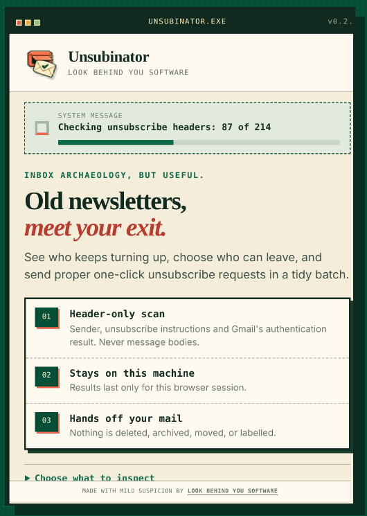
manifest.json, or unzip a fresh copy and redo step 9 in a plain-text editor.manifest.json yet. Do step 9, then click the reload icon on the extension's card.Unsubinator is free and built by one small studio. If it's cleared your inbox and you fancy saying thanks, a coffee is always appreciated.
Stuck? Email hello@lbysoftware.co.uk.